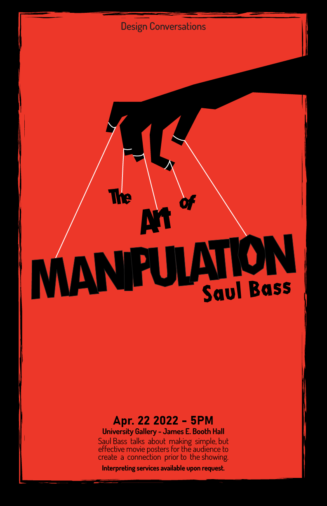

Goals With This Project
I created a poster that identifies a brooding mood with the classic silhouettes Saul Bass incorporates into his movie posters. I used Adobe Illustrator to complete this. His work consists of simple and geometric shapes. A symbolic image usually stands alone in his work. Despite being simple, his work packs a punch with a strong, representative message.
My work here takes apart his designs to make a poster that I think has the qualities that Saul Bass has in his work.
I made a poster for a lecture series about design featuring Saul Bass and his ability to manipulate the viewer’s perspective to grasp things the way he wants them to. I created a single image that would pack a meaningful punch with the title after many iterations.
